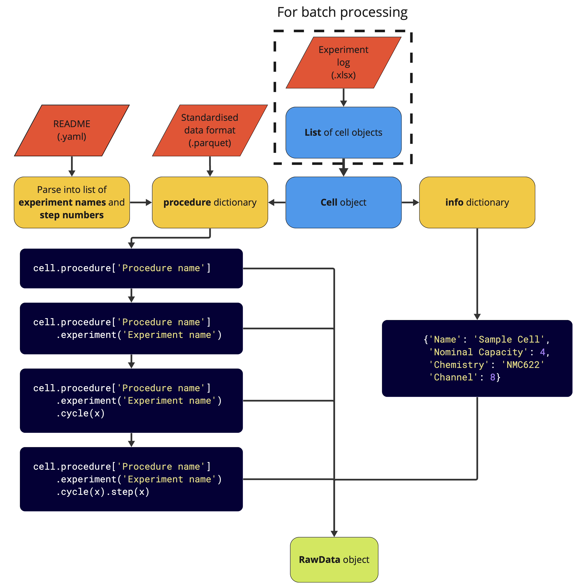

Introduction
PyProBE is a Python package designed to simplify the process of analysing data from battery cyclers. It has four core objectives:
- Ease of use
PyProBE is written in Python, a commonly used programming language in the battery community. However, it has been designed to be approachable for those with little programming experience.
PyProBE breaks down complex battery data into simple, easy to understand objects that can be accessed with a few lines of code using natural language. The procedure shown below:

can be filtered with simple commands like:
# Filter the data to only include the charge pulses cell.procedure['RPT'].experiment('Charge Pulses') # Filter to only the charge step of the third pulse cell.procedure['RPT'].experiment('Charge Pulses').cycle(2).charge(0)
This makes it easy to quickly access the data you need for analysis.
- Accelerate battery data exploration
PyProBE has a built-in plotting module for fast and flexible visualisation of battery data. It also includes a graphical user interface (GUI) for exploring data interactively, with almost no code.
- Encourage data processing aligned with FAIR principles
PyProBE is designed to encourage good practice for storing and processing data. The FAIR principles. PyProBE requires a README file to sit alongside your experimental data which is:
- Computer readable
Simplifies the PyProBE backend, maximises flexibility to different input data and makes the setup setup process fast and intuitive for new data.
- Human readable
Sits alongside your data to allow others to quickly understand your experimental procedure.
See the guidance for writing README files for your experiments.
- Host a library of post processing methods
PyProBE’s
methodframework enables further analysis of battery data, maintaining compatibility with the PyProBE data format and plotting tools while ensuring functions are simply defined, portable and tested.It is easy to write your own method. See the guidance and contributing guidelines.
PyProBE Structure
Below is a flowchart of the data objects that make up PyProBE:
All data is stored in a Cell object, which contains an
info attribute for storing metadata and a
procedure dictionary for storing data for the experimental
procedures run on the cell. These can be further filtered as described in the
Filtering section of the user guide.
Once the data is filtered, it can be processed further with a
method or displayed using the built-in plot
module. All filters and methods produce objects that are compatible with the plotting
module, making it easy to visualise the data at any stage of the analysis. Additionally,
all methods produce a Result which can be an input to further
methods. This is summarised in the flowchart below:

This documentation
These docs are generated from the continuous development branch (main) of the PyProBE repository. If you are using a particular release of PyProBE, you can generate the docs specific to your release locally by running the following commands:
cd PyProBE/docs
make html
Then navigate to PyProBE/docs/build/html/ and open index.html in your
web browser.